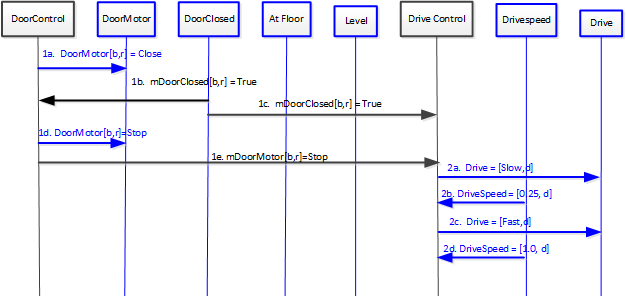
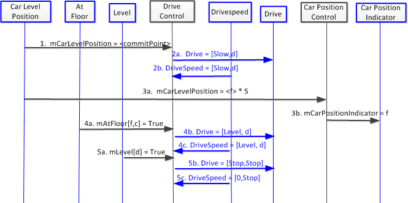
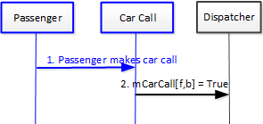

Use Case 6: Determine
Car Position
Scenario 6B: Car moves past hallway b on floor f.
Author name: Jeff Lau (jalau)
Pre-Conditions:
- Car is moving {FAST, UP} [f, b].
- All elevator doors are closed.
- Car is moving in hoistway.
Scenario:
- The car nears floor f
- and the car position indicator changes to f
Post-Conditions:
- All elevator doors are closed.
- Drivespeed is {1.0, UP}
- Car position indicator is at f
Sequence Diagram:

Scenario 8A: Elevator moves away from {floor f, hallway b}
in direction d.
Author name: Jeff Lau (jalau)
Pre-Conditions:
- Elevator is at floor f, with at least one Door[b,r]
open.
- Drive is stopped.
Scenario:
- Door[b,r] closes.
- The Drive operates at Fast in direction d.
Post-Conditions:
- Elevator is moving in the hoistway
- Drive is Fast.
- All doors are closed
Sequence Diagram:

Scenario 8B: Elevator arrives at {floor f, hallway b}
in direction d.
Author name: Jeff Lau (jalau)
Pre-Conditions:
- Elevator moving in the hoistway
- Drive is fast.
- Car position indicator is at g
Scenario:
- Car Position reaches commit point.
- The Drive transitions to Slow in direction d.
- The car nears level f and the drive
transitions to Level.
- The car position indicator changes to f.
Post-Conditions:
- Elevator is stopped in the hoistway
- Drive is Stopped.
- All doors are closed
- Car position indicator is at f.
Sequence Diagram:

Scenario 8C: A passenger performs a car call to a floor the
elevator cannot stop at.
Author name: Jeff Lau (jalau)
Pre-Conditions:
Scenario:
- Passenger pushes button to stop at floor f
- The Dispatcher decides that it is not possible to stop
at that floor.
- The elevator moves past floor f.
Post-Conditions:
- Elevator is moving in the hoistway
- Drive is Fast.
- All doors are closed
Sequence Diagram:

Scenario 8D: A passenger performs a hall call at a floor the
elevator cannot stop at.
Author name: Jeff Lau (jalau)
Pre-Conditions:
Scenario:
- Passenger pushes button at floor f
- The Dispatcher decides that it is not possible to stop
at that floor.
- The elevator moves past floor f.
Post-Conditions:
- Elevator is moving in the hoistway
- Drive is Fast.
- All doors are closed
Sequence Diagram:

{kind=link}
{kind=link}
{kind=link}